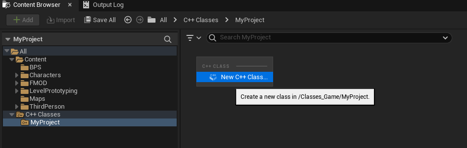
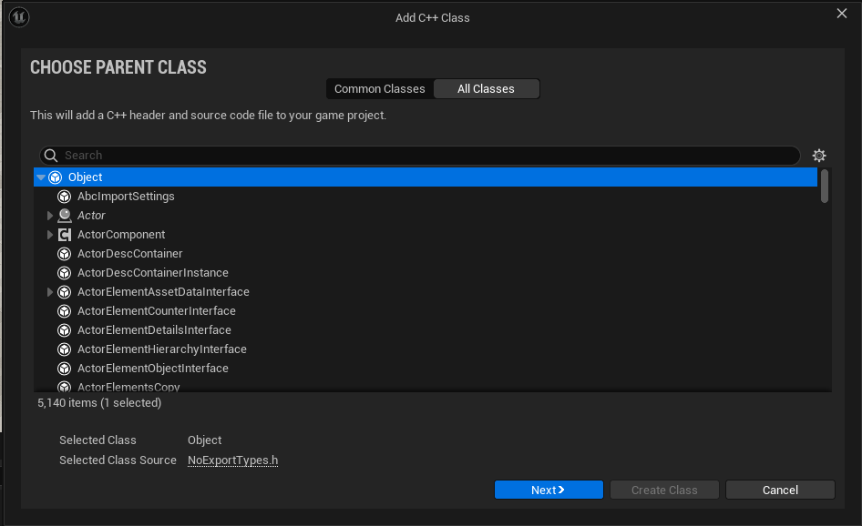
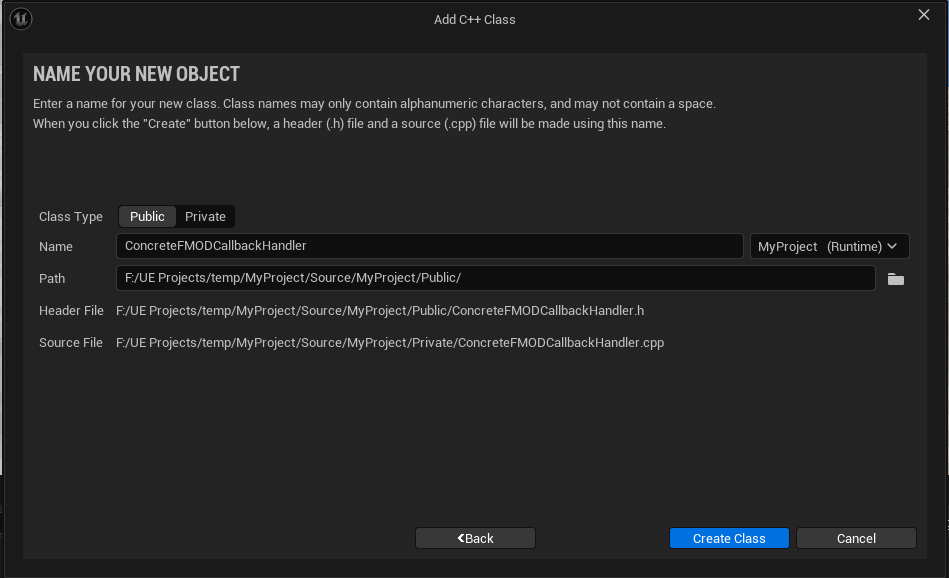
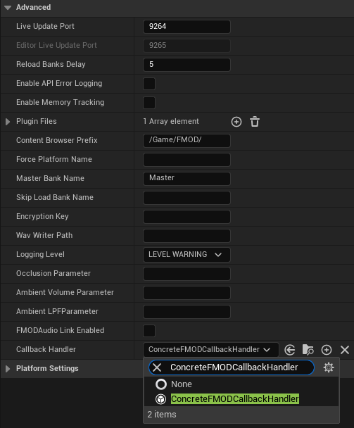

Unreal Integration 2.03
4. Plugins
FMOD Studio projects can be set up to use third party plugins. These can include custom DSP effects that are created in-house or commercial products that can be used with FMOD Studio.
4.1 Adding plugins to the project
4.1.1 Dynamic Plugins
The plugins must be loaded at runtime so that they are there when loading the banks that need them. Plugins are set up in the project settings Advanced section.

Each entry should be the filename of the plugin, without any extension. Any plugin files required should be added to the platform's binary directory:
| Platform | Binary Directory |
|---|---|
| Windows | Plugins/FMODStudio/Binaries/Win64 |
| Mac | Plugins/FMODStudio/Binaries/Mac |
| iOS | Plugins/FMODStudio/Binaries/IOS |
| tvOS | Plugins/FMODStudio/Binaries/TVOS |
| Android | Plugins/FMODStudio/Binaries/Android |
| PS4 | Platforms/PS4/Plugins/FMODStudio/Binaries |
| PS5 | Platforms/PS5/Plugins/FMODStudio/Binaries |
| Switch | Platforms/Switch/Plugins/FMODStudio/Binaries |
| WinGDK | Platforms/WinGDK/Plugins/FMODStudio/Binaries |
| Xbox One | Platforms/XB1/Plugins/FMODStudio/Binaries |
| Xbox Series | Platforms/XSX/Plugins/FMODStudio/Binaries |
For example, to use fmod_gain.dll on Win64 builds, you should add the file here:
FMODStudio/Binaries/Win64/fmod_gain.dll
4.1.2 Static Plugins
Switch, iOS, and tvOS require plugins to be linked statically, which requires manually registering them with the FMOD::System. To achieve this you can create a new UObject that implements IFMODCallbackHandler and calls FMOD::System::registerDSP in the IFMODCallbackHandler::PreInitialize callback.
Creating the C++ UObject:

Select Object:

Name the Object:

Implement the callback handler, replacing MYPROJECT_API with the name of your project's API:
#pragma once
#include "CoreMinimal.h"
#include "UObject/NoExportTypes.h"
#include <FMODCallbackHandler.h>
#include "fmod_errors.h"
#if PLATFORM_IOS
extern "C" FMOD_DSP_DESCRIPTION* FMOD_ResonanceAudioListener_GetDSPDescription();
extern "C" FMOD_DSP_DESCRIPTION* FMOD_ResonanceAudioSoundfield_GetDSPDescription();
extern "C" FMOD_DSP_DESCRIPTION* FMOD_ResonanceAudioSource_GetDSPDescription();
#endif
#include "ConcreteFMODCallbackHandler.generated.h"
UCLASS()
class MYPROJECT_API UConcreteFMODCallbackHandler : public UObject, public IFMODCallbackHandler
{
GENERATED_BODY()
public:
void PreInitialize(FMOD::Studio::System* System) override
{
#if PLATFORM_IOS
FMOD::System* CoreSystem;
FMOD_RESULT result = System->getCoreSystem(&CoreSystem);
if (result != FMOD_OK)
{
UE_LOG(LogTemp, Warning, TEXT("UConcreteFMODCallbackHandler::PreInitialize: Failed to acquire core system: %s"), UTF8_TO_TCHAR(FMOD_ErrorString(result)));
return;
}
unsigned int ListenerHandle;
result = CoreSystem->registerDSP(FMOD_ResonanceAudioListener_GetDSPDescription(), &ListenerHandle);
if (result != FMOD_OK)
{
UE_LOG(LogTemp, Warning, TEXT("UConcreteFMODCallbackHandler::PreInitialize: Failed to register ResonanceAudioListener: %s"), UTF8_TO_TCHAR(FMOD_ErrorString(result)));
}
unsigned int SoundfieldHandle;
result = CoreSystem->registerDSP(FMOD_ResonanceAudioSoundfield_GetDSPDescription(), &SoundfieldHandle);
if (result != FMOD_OK)
{
UE_LOG(LogTemp, Warning, TEXT("UConcreteFMODCallbackHandler::PreInitialize: Failed to register ResonanceAudioSoundfield: %s"), UTF8_TO_TCHAR(FMOD_ErrorString(result)));
}
unsigned int SourceHandle;
result = CoreSystem->registerDSP(FMOD_ResonanceAudioSource_GetDSPDescription(), &SourceHandle);
if (result != FMOD_OK)
{
UE_LOG(LogTemp, Warning, TEXT("UConcreteFMODCallbackHandler::PreInitialize: Failed to register ResonanceAudioSource: %s"), UTF8_TO_TCHAR(FMOD_ErrorString(result)));
}
#endif
}
};
Once you recompile your source code you will be able to assign your newly created callback handler object to the UFMODSettings::CallbackHandler in the project settings Advanced section:

Alternatively you can specify a callback handler on a per-platform basis in the Platform Settings. If both callback handlers are specified only the platform specific callback handler will be executed.
4.2 Deploying FMOD plugins
You will need to make sure that both static and dynamic plugins are deployed as well. Unreal deployment doesn't have access to the settings information so you will need to create an extra file that lists the plugins you want to deploy.
Create a file "plugins.txt" in the platform's binary directory. The text file should contain the plugin names (just the name without file extension).
For example, to deploy fmod_gain.dll on Win64 builds, create a file FMODStudio/Binaries/Win64/plugins.txt with the following contents:
fmod_gain
Check the Platform Specifics for information relating to plugins on specific platforms.